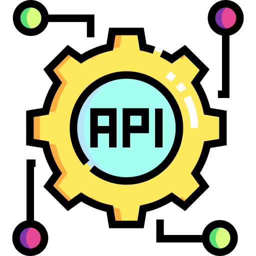
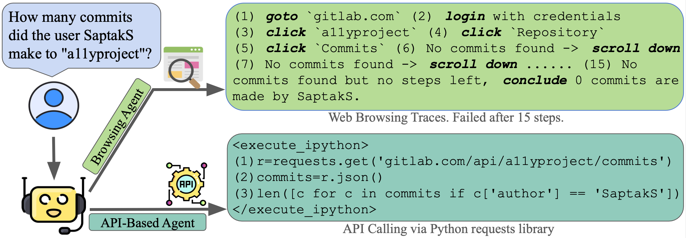

This project explores a novel approach to web agents by enabling them to use APIs in addition to traditional web-browsing techniques.
By leveraging API calls, agents can perform tasks more efficiently and accurately, especially on websites with comprehensive API support.

API-Based Agent: The API-based agent leverages application programming interfaces (APIs) to interact directly with web services, bypassing traditional web-browsing actions like simulated clicks.
Hybrid Agent: a agent that combines the power of API-Based Agent and traditional Web-Based Agent, capable of interleaving API calls and Web Browsing.
Real-World Web Task Evaluation and Analysis: On WebArena, a real-world web task benchmark, our hybrid agent achieve sota performance among task-agnostic models.
Web browsers are a portal to the internet, where much of human activity is undertaken.
Thus, there has been significant research work in AI agents that interact with the internet through web browsing.
However, there is also another interface designed specifically for machine interaction with online content: application programming interfaces (APIs).
In this paper we ask -- what if we were to take tasks traditionally tackled by browsing agents, and give AI agents access to APIs?
To do so, we propose two varieties of agents: (1) an API-calling agent that attempts to perform online tasks through APIs only, similar to traditional coding agents, and (2) a hybrid agent that can interact with online data through both web browsing and APIs.
In experiments on WebArena , a widely-used and realistic benchmark for web navigation tasks, we find that API-based agents outperform web browsing agents, as depicted in Figure 1.
Hybrid agents outperform both others nearly uniformly across tasks, resulting in a more than 20.0% absolute improvement over web browsing alone, achieving a success rate of 35.8%.
These results strongly suggest that when APIs are available, they present an attractive alternative to relying on web browsing alone.
Figure 1: A comparison of three types of agents.
The Browsing Agent performs tasks through web browsing only, utilizing the accessibility tree to interact with web pages, achieving an average performance of 14.8% on WebArena.
The API-Based Agent performs tasks by making API calls and generating code without relying on web browsing, achieving an average accuracy of 29.2%.
The Hybrid Agent combines both methods, dynamically switching between web browsing and API calling, depending on the task.
This allows the execution of either API calls or web browsing actions, or both in combination, improving performance by more than 5 percentage points compared to the API-Based Agent.
This project is structured around three key aspects:
§API-Based Agent: The API-based agent is designed to interact directly with web services using structured API calls, bypassing traditional web-browsing methods like simulated clicks and form inputs. By leveraging predefined endpoints, the agent can efficiently retrieve and manipulate data, reducing the number of steps required to complete tasks. This approach not only improves task accuracy but also enhances efficiency, especially on websites with comprehensive API support.
§Hybrid Agent: The hybrid agent combines the strengths of API-based interactions and traditional web browsing by dynamically switching between the two methods based on the task requirements. This flexibility allows the agent to leverage API calls when they are available and efficient, while seamlessly resorting to web browsing actions for tasks that lack adequate API support. As a result, the hybrid agent is capable of handling a wider range of tasks with improved accuracy and efficiency compared to API-Based and traditional web agents.
§Real-World Task Evaluation and Analysis: Are compare the agent on the WebArena benchmark. We are the first to perform a comparison of API-based agents, browsing-only agents, and hybrid agents. The results demonstrated that API-based agents outperformed browsing-only agents on websites with comprehensive API support, while the hybrid agent achieved the highest overall accuracy by dynamically switching between APIs and web browsing. Our analysis shows that the hybrid approach not only improves task efficiency but also provides greater flexibility and robustness in handling diverse and complex web interactions.
we focus on WebArena tasks, which simulate real-world scenarios to evaluate an agent's ability to complete diverse web-based activities.
Tasks in WebArena include interacting with platforms like Gitlab (to manage projects and repositories), Reddit (to browse and post content), e-commerce websites (for shopping), and mapping services (for trip planning).

Figure 2: The API-based agent can often solve problems in many fewer function calls than traditional browsing agents.
In this task, web browsing failed to solve the intent "find the number of commits the user `SaptakS` made to the repo `a11yproject`" after 15 steps, while our API-based agent successfully completed the task with only three lines of code.
Web Browsing Agent
A baseline web browsing agent leverages the accessibility tree of web pages, which organizes interactive elements like buttons, input fields, and links in a hierarchical structure.
This structure makes it easier for agents to navigate the web by simulating human-like browsing behaviors such as clicking, filling out forms, and moving between pages.
The agent maintains a comprehensive history of all its previous actions, allowing it to inform its future decisions based on past interactions.
However, due to the complexity of some web elements and their dynamic nature, the browsing agent struggles with tasks requiring numerous or intricate interactions.
For example, in the task in Figure 2, the agent needs to determine the number of commits made by a specific user to a project.
A traditional browsing-based approach involves logging in, navigating to the correct project, and attempting to scroll through and find the user's commits, and thus the task becomes too complex and fails after the agent's 15-step limit.
From Web Browsing to API Calling
In contrast to web browsing, API calling offer a direct interface for machines to communicate with web services, reducing operational complexity.
Figure 3: The API-based agent can often solve problems in many fewer function calls than traditional browsing agents.
In this task, web browsing failed to solve the intent "find the number of commits the user `SaptakS` made to the repo `a11yproject`" after 15 steps, while our API-based agent successfully completed the task with only three lines of code.
APIs and API Documentation
Websites with API support offer pre-defined endpoints for efficient task execution using standardized protocols like REST.
These APIs enable interactions via HTTP requests (e.g., GET, POST, PUT) and return structured data such as JSON objects.
API documentation is typically provided in formats like README, OpenAPI YAML, or plain text, offering guidance on using the APIs.
For instance, Figure 3 shows the official README documentation of a Gitlab API GET /api/{id}/commits. It documents the functionality, input arguments, and output types of the API.
For example, one could use the Python requests library, by calling requests.get("gitlab.com/api/a11yproject/commits"), to retrieve all commits of the repository a11yproject.
This would return a JSON list containing all the commits to this repo, as shown in Figure 3.
Transitioning from Web Browsing to API Calling
Approaches utilizing APIs is avoid complexity in web browsing, and can minimize the steps involved in complex workflows.
For example, as discussed in Figure 2, to accomplish the task of finding the number of commits by SaptakS in a11yproject, a basic method for implementing API calling, such as CodeAct , could directly call the repository's commit history via a simple API request GET /api/a11yproject/commits and then filter the results to find the commits made by SaptakS.
The task could completed in just three lines of Python code, showcasing the clear efficiency and precision that methods based on API calling could offer compared to web browsing.
Obtaining APIs for Agent Use
The process of acquiring APIs typically involves looking up official API documentation on a website.
To maintain a structured and readable format of API documentations, we could utilize either OpenAPI YAML-style and README-style documentations.
Some websites might offer official YAML oor README documentations of APIs, and in such cases, in the prompt we provide API documentations sourced directly from the public API documentation provided for the website.
In other cases, where no official YAML or README documentations are provided, we could leverage LLMs like GPT-4o to generate these YAML or README files.
By prompting GPT-4o with the relevant implementation details of the APIs (for example, the implementation of the APIs), we could generate comprehensive documentation, including input parameters, expected outputs, and example API calls, as depicted in Figure 3.
One-Stage Documentation for Small API Sets:
For websites with a smaller number of API endpoints, we directly incorporate the full documentation into the prompt provided to the agent.
Specifically, we use a threshold of 100 APIs, but this could be adjusted depending on the supported language model context size.
Two-Stage Documentation Retrieval for Large API Sets:
For websites with a larger number of endpoints, providing the full documentation directly within the prompt was impractical due to the size limitations of agent inputs.
To address this, we employed a two-stage documentation retrieval process, which allowed access to only the relevant information as needed, keeping the initial prompt concise.
In the first stage, the user prompt could provide a description of the task, with a list of all available API endpoints along with a very brief description of each API.
This initial summary helps facilitating understanding the scope of the available APIs while staying within the prompt size constraints.
In the second stage, if the model determines that it needs detailed information about a specific API endpoint or some API endpoints, it can use a tool called get_api_documentation.
This tool searches a dictionary that maps an API to its documentation, enabling the model to retrieve the full README or YAML documentation for any given endpoint by calling get_api_documentation with the endpoint's identifier.
This might include the input parameters, output formats, and examples of how to interact with the endpoint.
For example, to retrieve the documentation for the endpoint GET /api/{id}/commits, the agent would call get_api_documentation("GET /api/{id}/commits"), and an example returned API documentation is the documentation in Figure 3.
Hybrid Browsing+API Calling Agents
Then, the question arises: given the benefits of API calling, should we discard web browsing altogether?
The key limitation is that not all websites provide comprehensive or well-documented APIs, necessitating traditional web browsing in certain cases.
To address this, we propose a hybrid agent that dynamically switches between API calls and web browsing based on task requirements.
This agent has three options per step: communicating in natural language, generating Python code for API calls, or performing web browsing actions.
The hybrid agent's prompt includes both API documentation and web-browsing instructions, allowing it to adapt flexibly to each task's demands.
This approach improves performance by leveraging the strengths of both methods, depending on API availability and documentation quality.
Experimental Setup
Websites
Gitlab
Map
Shopping
Admin
Reddit
Number of Endpoints
988
53
556
556
31
API Quality
Good
Good
Fair
Fair
Poor
Documentation Quality
Good
Good
Fair
Fair
Poor
Table 1: Number of endpoints, quality of API, and documentation quality for WebArena websites.
Here, we provide a detailed analysis of the API support for various websites used in the WebArena tasks, categorized into three levels: good, medium, and poor.
The availability, functionality, and documentation of APIs, as described in Table 1, play a crucial role in the efficiency and flexibility of our agents.
Evaluation
For evaluation, we compare Pangea-7B against several state-of-the-art open source baselines, including English-centric models Llava-1.5-7B , Llava-Next-7B , Phi-3.5-Vision , Cambrian-8B and multilingual models PaliGemma-3B , PALO-7B , mBLIP mT0-XL and mBLIP BLOOMZ .
We also consider two text-only LLMs baselines Vicuna-1.5-7B and Qwen2-7B-Instruct , which are the backbones of Llava-Next and our Pangea-7B respectively.
We integrate our multimodal tasks in PangeaBench into lmms-eval, a multimodal evaluation package that supports many English multimodal benchmarks.
We use lm-evaluation-harness to evaluate text-only tasks.
We follow the original paper for their best models' prompts in different tasks.
Figure 1 shows the aggregate performance of various multimodal LLMs on PangeaBench.
Models
AVG (all)
Multimodal Chat
Cultural Understanding
Captioning
Short VQA
Multi-subject Reasoning
AVG (all)
xChatBench
M-LlavaBench
CVQA
MaRVL
XM100
xGQA
MaXM
xMMMU
M3Exam
en
mul
en
mul
en
mul
en
mul
en
mul
en
mul
en
mul
en
mul
en
mul
en
mul
Proprietary Models
Gemini-1.5-Pro
67.1
62.5
67.0
54.4
103.4
106.6
75.9
75.7
76.4
72.0
27.6
19.1
54.2
48.7
56.4
63.5
65.8
57.7
77.4
64.7
GPT4o
68.6
64.6
71.0
64.4
104.6
100.4
79.1
79.4
81.4
82.1
27.7
19.1
55.8
51.0
60.7
65.4
69.1
58.3
68.0
61.0
English Models
Llava-1.5-7B
45.4
28.4
28.5
11.8
66.1
40.8
48.9
36.5
56.2
53.7
28.6
1.1
62.0
30.6
49.8
20.4
36.2
31.5
32.3
29.0
Llava-Next-7B
51.1
32.7
40.5
18.9
78.9
50.7
55.7
42.6
62.8
50.9
29.3
9.4
64.8
37.8
54.9
21.4
36.7
34.3
36.5
28.4
Phi-3.5-Vision
54.0
35.0
38.5
13.2
70.8
58.0
56.3
42.3
72.1
56.5
30.2
5.2
64.7
38.4
55.3
25.0
42.6
38.8
55.8
37.2
Cambrian-8B
50.9
36.4
27.5
11.3
78.4
61.8
59.7
47.5
75.4
61.8
20.6
9.9
64.6
39.8
55.3
28.7
41.8
33.2
34.7
33.4
LLaVA-OV-7B
59.5
41.3
51.0
28.5
89.7
55.3
65.2
53.7
72.7
57.5
30.6
7.0
64.4
48.2
54.9
34.8
46.3
41.0
60.4
45.8
Molmo-7B-D
55.4
34.1
49.5
21.1
95.9
13.8
59.4
48.3
65.3
54.9
22.1
9.1
51.5
43.0
52.9
37.5
44.5
40.4
57.1
39.1
Llama3.2-11B
57.2
41.9
49.0
27.8
93.9
58.2
70.2
61.4
64.5
58.1
27.6
4.5
55.6
45.4
55.3
43.9
46.5
41.4
51.8
36.6
Multilingual Models
PaliGemma-3B
37.3
25.8
6.0
3.5
32.1
31.9
52.9
42.9
56.5
52.2
18.7
0.8
59.7
30.5
47.9
19.9
26.3
25.2
36.0
25.6
PALO-7B
46.3
32.2
27.0
11.8
68.9
71.2
50.9
39.2
63.3
54.2
30.4
0.8
60.5
37.8
51.4
16.3
33.1
30.5
30.8
27.8
mBLIP mT0-XL
35.1
29.8
2.5
0.5
32.7
28.2
40.5
37.5
67.3
66.7
31.9
3.1
44.2
39.9
44.7
36.8
29.3
30.4
22.8
25.0
mBLIP BLOOMZ
36.1
30.0
4.0
1.6
43.5
41.0
44.9
36.9
62.3
58.6
22.5
10.3
43.3
36.9
44.7
24.8
29.2
30.8
30.3
29.5
Pangea
Pangea-7B (Ours)
59.9
52.7
46.0
35.6
84.2
89.5
64.4
57.2
87.0
79.0
30.4
14.2
64.7
60.2
55.3
53.2
45.7
43.7
61.4
42.1
Δ over SoTA Open
+0.4
+10.8
-3.5
+7.1
-11.7
+18.3
-5.8
-4.2
+11.6
+12.3
-0.2
+3.9
-0.1
+12.0
0.0
+9.3
-0.8
+2.3
+1.0
-3.7
Table 1: Models' multilingual multimodal evaluation results on PangeaBench.
Multilingual Multimodal Results
We show the performance of models on the multimodal tasks from PangeaBench in Table 1.
The results provide clear insights into the strengths and remaining challenges of Pangea-7B in multilingual and multimodal tasks. Key observations from the evaluation include:
1) Superior English and Multilingual Performance: Pangea-7B outperforms existing open-source models across both English and multilingual tasks. Particularly in cultural understanding (CVQA, MaRVL), it has achieved substantial gains, highlighting its effectiveness in both cross-lingual and cross-cultural contexts.
2) Balanced Cross-Language Capabilities: Unlike many models that exhibit a significant drop in performance when moving from English to multilingual tasks, Pangea-7B is relatively consistent. For instance, in Multimodal Chat tasks, the performance gap between English and multilingual remains relatively small, indicating its ability to handle multiple languages effectively.
3) Challenges Compared to Proprietary Models: While Pangea-7B leads in open-source models, some gaps remain when compared to closed-source models like GPT4o. Additionally, though Pangea-7B narrows the gap between English and multilingual performance, there is still room for improvement in fully closing this divide across all tasks.
Multilingual Text-only Results
We further evaluate our model in text-only scenarios in Table 2. Interesting findings include:
1) Best Text Performance Among Multimodal LLMs: Pangea-7B demonstrates the strongest performance among all multimodal LLMs in the text-only tasks consistently outperforming baselines like Llava-Next-7B. This highlights that, despite being trained as a multimodal model, Pangea-7B maintains superior text understanding and reasoning capabilities compared to other MLLMs.
2) Maintained Performance from its Text Backbone: Pangea-7B generally maintains or sees slight drops in performance on most text-only benchmarks compared with its text backbone Qwen2-7B-Instruct. Notably, the model shows a significant improvement in MGSM. This improvement is directly attributable to the inclusion of math-related instructions in PangeaIns, which enhances the model's capability to handle complex multilingual reasoning and mathematical tasks.
Table 2: Models' multilingual text-only evaluation results on PangeaBench.
Discussion
Figure 5: Scaling effect of training samples on English and multilingual scores across datasets.
Scaling Effect of Number of Instructions:
Understanding how the quantity of instructions affects model performance is crucial for optimizing training strategies and resource allocation.
Figure 5 reveals a clear scaling effect related to the number of instructions used during training.
Performance improvements were consistent as we increased the number of multilingual instructions in PangeaIns, for both English and multilingual performance.
This demonstrates the necessity of scaling multilingual multimodal instruction tuning.
Figure 6: Impact of English training data proportion on English vs. multilingual performance.
Role of English Data:
In multilingual scenarios, English data plays a pivotal role in cross-lingual transfer.
To investigate this, we sampled 500K examples from the translated data described in Machine Translated Instructions, ensuring a consistent data distribution.
We varied the ratio of English data while keeping the total number of training samples fixed at 500K.
For the 17 multilingual languages in the translated subset, we evenly distributed the number of samples across languages.
As shown in Figure 6, English performance generally improves as the percentage of English data increases.
More surprisingly, using no English data (full multilingual data) results in relatively lower multilingual performance.
As we introduce more English data, multilingual performance improves, peaking at 38.7% with 40% English.
However, performance drops sharply when English data reaches 100%.
This suggests that English data aids cross-lingual transfer, however, over-reliance on it harms multilingual performance.
Figure 7: The relationship between training sample size (relative to English) and performance (relative to English) of different languages across four datasets.
How does the proportion of training samples in a language affect downstream performance?
An interesting question to ask is whether the downstream task performance is correlated with the number of training samples.
Our analysis in Figure 7 revealed a nuanced relationship between training sample proportion and downstream performance.
While there is a general positive correlation, the impact varies significantly across languages and tasks.
For widely spoken languages with rich linguistic resources, we observed a near-linear relationship.
However, for low-resource languages, even a small increase in proportion yielded disproportionately large performance gains.
Interestingly, we also noted instances of positive transfer between typologically similar languages.
These findings suggest that strategic allocation of training samples, considering both language prevalence and linguistic similarities, can optimize overall model performance.
Figure 8: A preliminary exploration of multilingual OCR.
Preliminary Explorations of Multilingual OCR:
Multilingual OCR emerged as a particularly challenging aspect of Pangea's functionality.
We made efforts to enhance its multilingual OCR capabilities.
Specifically, we constructed a dataset of 500K multilingual OCR instructions spanning 10 languages, with 50K examples per language, sourced from web user interfaces.
Webpages naturally serve as image-rich environments containing abundant text, and by capturing screenshots of websites from various countries in different languages, we were able to gather a substantial number of OCR images.
We employed the same model architecture as Pangea but trained it exclusively on these OCR images, reserving a portion of the data as a test set. As shown in Figure 8, the results indicate that improving multilingual OCR performance is feasible with an increase in training samples.
However, the OCR accuracy for non-Latin scripts (e.g., Chinese, Japanese, and Korean) remains lower than for Latin-based languages.
Looking ahead, we aim to further expand the multilingual OCR training dataset to include more languages and integrate this data into PangeaIns.
Conclusion
We introduced Pangea, a novel multilingual multimodal large language model designed to bridge linguistic and cultural gaps in visual understanding tasks.
By leveraging PangeaIns, our newly curated 6M multilingual multimodal instruction data samples, we demonstrated significant improvements in cross-lingual and cross-cultural understanding across 39 typologically diverse languages.
Our comprehensive evaluation using PangeaBench revealed Pangea's superior performance compared to existing open-source models, particularly in tasks requiring nuanced cultural interpretation.
We also highlight ongoing challenges in areas such as low-resource language support and multilingual OCR.
We fully open-source Pangea, PangeaIns, and PangeaBench to facilitate future research to build open and inclusive MLLMs.
Acknowledgement
This work was supported in part by the Carnegie Bosch Institute Fellowship and a grant from DSTA Singapore.
The training is supported by the CMU FLAME Center.
The authors would like to thank CMU NeuLab colleagues for their constructive comments.
The authors would like to thank Google Gemini credits for data construction and evaluation.
The authors would like to thank Cambrian team for their project webpage template.
BibTeX
@article{tong2024cambrian,
title={{Cambrian-1: A Fully Open, Vision-Centric Exploration of Multimodal LLMs}},
author={Tong, Shengbang and Brown, Ellis and Wu, Penghao and Woo, Sanghyun and Middepogu, Manoj and Akula, Sai Charitha and Yang, Jihan and Yang, Shusheng, and Iyer, Adithya and Pan, Xichen and Wang, Austin and Fergus, Rob and LeCun, Yann and Xie, Saining},
journal={arXiv preprint arXiv:2406.16860},
year={2024}
}